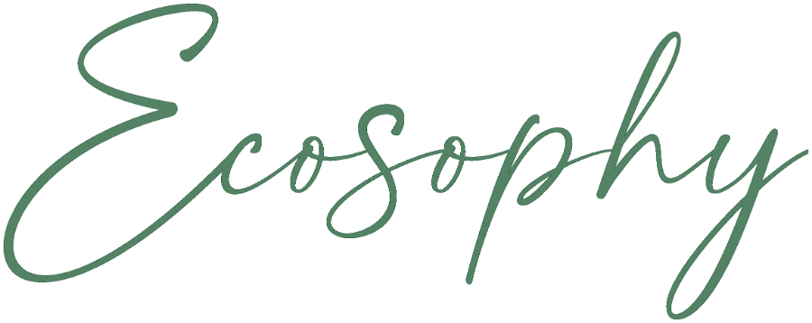

Choose your world
Two sanctuaries, one philosophy.
for her
Ecosophy Beauty Center & SPA
Russian nail, lash and brow masters, advanced facials and spa rituals.
ENTER
for him
Ecosophy Aesthetic Spa Men Care Center
Deep tissue, Moroccan bath and recovery therapy for men.
ENTER
AJMAN, UAE
FOR HER
FOR HIM
INSTAGRAM
Daily · 10:00 AM – 10:00 PM